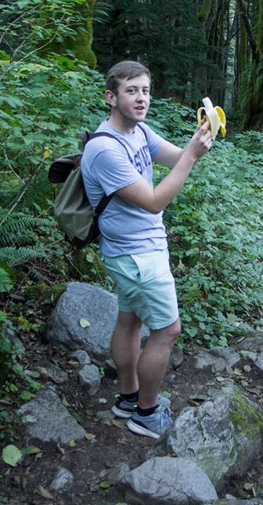

Office: Padelford C-020 Office Hours for Fall 2019: Tuesday 3:30-5:30 Office Hours Location: Padelford C-401 E-mail: djclancy 'at' uw 'dot' edu
 Math-loving ape eats a banana.
Research
Research Interests
I am a fourth year graduate student in the math department at the University of Washington. I'm interested in probability theory. In particular, I have recently spent most of my time thinking and learning about random trees and their connections with Brownian motion, its excursions, branching processes and other related processes.